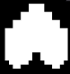

Início
Quiz
Login
Cadastro
História
Fases
Rotas
Almas e Humanos
Amigos
Chefes
Almas
Em Undertale, as almas (SOULs) representam a essência de cada ser vivo. Elas simbolizam a força interior, as emoções e a capacidade de persistir diante das dificuldades. No universo do jogo, as almas humanas são especialmente poderosas: cada uma possui uma cor que representa um traço humano fundamental, como determinação, coragem ou paciência. As almas humanas são tão fortes que podem persistir mesmo após a morte, o que as torna capazes de quebrar a Barreira — a prisão mágica que mantém os monstros presos no Subterrâneo. Por isso, Asgore precisa reunir sete almas humanas para libertar seu povo. A alma do protagonista, de cor vermelha, representa a Determinação, o traço que permite ao jogador salvar, voltar no tempo e alterar o destino. Já Flowey, que não possui alma, carece de empatia e emoções reais, o que é um ponto central da narrativa. Ao todo, Undertale usa as almas como símbolo de força moral e identidade, mostrando que a verdadeira mudança no mundo vem das escolhas, sentimentos e determinação de cada personagem.
A Alma Vermelha é a alma do protagonista de Undertale e representa o traço humano da Determinação. É a alma mais poderosa do jogo e simboliza a força de vontade de continuar avançando, mesmo diante de fracassos ou desafios impossíveis. Essa determinação é o que permite ao jogador: - Salvar e carregar o progresso, - Resetar o mundo, - Tentar novamente após a morte, - E realizar ações que desobedecem às regras naturais do Subterrâneo. Por isso, personagens como Flowey e Sans percebem algo “diferente” no humano: eles sentem que essa alma tem a capacidade de alterar o próprio destino e mudar linhas do tempo. Na história, a Alma Vermelha também é um contraste direto com Flowey, que não possui alma e, portanto, carece de empatia e emoção. A Determinação do protagonista é o elemento que torna possíveis finais como o Pacifista Verdadeiro — ou, se mal usada, permite o massacre da Rota Genocida. Em resumo, a Alma Vermelha é o símbolo máximo da escolha do jogador: a força que tanto pode salvar quanto destruir o Subterrâneo.
A Alma Azul-claro representa o traço humano da Paciência. Ela simboliza a capacidade de permanecer calmo, esperar o momento certo e agir com serenidade mesmo diante de desafios. No universo de Undertale, essa alma pertenceu a uma das seis crianças humanas anteriores que caíram no Subterrâneo. Embora o jogador nunca encontre diretamente o portador dessa alma, sua presença é sentida através de referências e simbolismos. A paciência está associada ao estilo de luta da alma: calma, controle e resistência emocional. Nos temas do jogo, ela reforça a ideia de que algumas batalhas não se vencem com força, mas com tranquilidade e tempo. Assim como as outras almas humanas, a Alma Azul-claro possui grande poder e poderia ajudar a quebrar a Barreira. No entanto, seu destino — assim como o das demais — é revelado apenas nas rotas Neutra e Pacifista.
A Alma Laranja representa o traço humano da Coragem. Ela simboliza bravura, enfrentamento e disposição para agir mesmo diante do perigo. Essa alma pertenceu a uma das seis crianças humanas que chegaram ao Subterrâneo antes dos eventos do jogo. No significado temático, a Coragem está ligada à força emocional de enfrentar medos e seguir em frente sem hesitar. Embora o portador da Alma Laranja nunca apareça diretamente, essa alma — como todas as outras — é usada por Asgore para tentar romper a Barreira e libertar os monstros. No jogo, a cor laranja também aparece em alguns padrões de ataque, especialmente nos ataques de Undyne. A regra desses ataques reflete a essência da alma: para lidar com o laranja, é preciso se mover, simbolizando ação e bravura — uma representação direta da Coragem. Assim como as demais almas humanas, a Alma Laranja possui grande poder e é um elemento importante no lore do Subterrâneo.
A Alma Azul Escuro representa a Integridade. Ela está associada ao personagem Undyne e simboliza a força de permanecer fiel aos próprios valores, mesmo sob pressão. No jogo, essa alma não possui uma mecânica própria usada pelo jogador (como a Azul da gravidade ou a Amarela dos tiros), pois aparece apenas nas almas humanas mostradas na rota Genocida. Sua função é principalmente temática/narrativa, representando um dos traços humanos essenciais que compõem o mundo de Undertale.
A Alma Roxa representa a Perseverança. Ela simboliza a capacidade de continuar lutando e avançando, mesmo diante de obstáculos ou sofrimento. No jogo, a Alma Roxa é vista apenas nas almas humanas mostradas durante a rota Genocida e não possui uma mecânica de batalha jogável própria (como a Azul ou Amarela). Sua presença é principalmente narrativa, reforçando a ideia de que cada alma humana carrega um traço único e poderoso que influencia o mundo e sua história.
A Alma Verde representa a Bondade. Esse traço simboliza empatia, proteção e a capacidade de ajudar os outros, mesmo em situações difíceis. No jogo, ela aparece principalmente nas ilustrações das almas humanas e não possui mecânica jogável própria (como a Azul ou Amarela). No entanto, sua ideia está associada a personagens protetores e ações compassivas — como a postura defensiva que o jogador assume durante certas batalhas do início do jogo. A Alma Verde reforça o tema central de Undertale: A importância de agir com gentileza e valorizar a vida dos outros.
A Alma Amarela representa o traço de Justiça. Ela simboliza coragem para enfrentar o que é errado, defender os inocentes e lutar contra a injustiça. É uma das poucas almas com mecânica atribuída:No fan-game oficial “Undertale Yellow”, o portador da Alma Amarela tem a habilidade de atirar durante batalhas, algo semelhante ao estilo shooter. No Undertale principal, ela aparece apenas visualmente, sem função jogável direta, mas sua presença reforça o conceito de que cada alma humana possui um ideal forte que define sua personalidade.

A alma de monstro em Undertale é muito diferente da alma humana. Ela é frágil, instável e profundamente ligada ao corpo do monstro. Quando um monstro morre, sua alma não permanece no mundo; em vez disso, ela se desfaz imediatamente, transformando o corpo do monstro em pó. Essa fragilidade é a principal razão pela qual os monstros não conseguem atravessar a barreira que separa o Subsolo da superfície. Simplesmente não possuem força suficiente para manter sua alma existindo sem um corpo físico. Apesar de ser mais fraca, a alma de monstro é altamente emocional e mágica. Suas ações, ataques e comportamentos são influenciados pelos sentimentos, o que torna os monstros mais sensíveis e menos agressivos por natureza. Eles geralmente não lutam por maldade, mas por medo ou necessidade, refletindo o caráter delicado de suas almas. Em resumo, a alma de monstro representa uma forma de existência mais suave e efêmera, marcada pela magia, pela emoção e pela incapacidade de sobreviver após a morte física, contrastando fortemente com a força e a persistência das almas humanas.